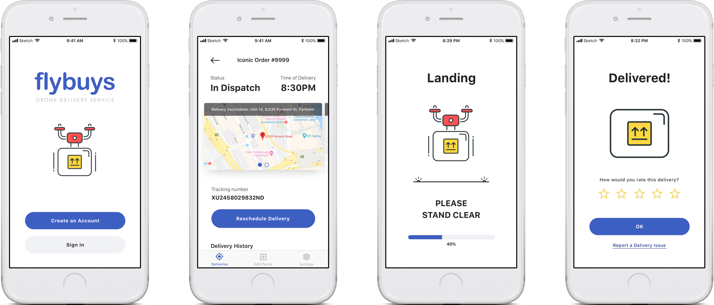

process journal.
Introduction
Hi there! Welcome to my process journal for DECO2200: Interaction Design Studio. Here you will find my brief documentation and reflections on the past few weeks of this project.
The Brief
The focus of this design project was on designing and prototyping screen-based interfaces that enable interactions with autonomous vehicles.
Going by the design brief, we came up with a few concepts, ranging from autonomous book returning services in libraries to event clean-up drones and food trucks.
We explored these concepts and talked about them in our group, eventually settling on an autonomous drone delivery service as we felt that it was more relatable to us and applicable to the kind of potential research participants that we had access to, given that the nature of this brief was based in the future and rather hypothetical.
Background Research
The first step was to conduct some background research for our chosen concept of drone deliveries to apartments.
Each of us chose 2 methods of research – one quantitative one qualitative, so as to better triangulate our results. The qualitative method of semi-structured interviews was the same for the three of us. For the quantitative method however, we were tasked to each choose a distinct one for our user research – as part of the learning process as well as to ensure our results were accurate to some degree.
Chris picked contextual observations, Daniel picked surveys, and I picked statistical analysis of existing sources. I was lucky to know a few people who lived in apartments.
The objective of this research was to understand the behaviours, experiences and attitudes of people towards parcel delivery from online purchases, with a focus on apartments in Australia.
Some of my research questions included:
- Who shops online? (to establish key demographic)
- What is the process of shopping online? (to understand current processes, contact points and behaviours)
- How do people feel about the way deliveries to apartments are currently done? (to draw insights on the attitudes towards the current state)
- What are some of the common delivery experiences? (to find out user pains with current system)
Research Findings
The data I had collected was compiled and synthesised into an affinity diagram.
 Figure 1.1 - Affinity Diagram from background research
Figure 1.1 - Affinity Diagram from background research
The affinity diagram consisted of data and insights collected from the interview transcripts as well as a report by AusPost on the recent state of e-commerce spending in Australia.
The exercised revealed that the users key concerns and needs were about Convenience, Flexibility and Security.
I was able to craft 2 personas and a storyboard out of the insights I had gathered.
 Figure 1.2 - Personas
Figure 1.2 - Personas
 Figure 1.3 - Storyboard
Figure 1.3 - Storyboard
The interviews went smoothly, and I was able to gather a lot of data. However, I struggled with the quantitative method of statistical analysis. Although I managed to extract some important data from a report that I had found which supported some of the insights from the interviews, the process of sourcing for reports was difficult. I don’t think that this method was well suited for the purposes of this research. Given the choice, I think surveys would make more sense.
We then came together and combined our individual insights and results, conducting a mind mapping session to confirm which were the most common user needs.
The data I had collected was compiled and synthesised into an affinity diagram.
Figure 1.4 - MindmapCombined list of user needs:
- I need to know that my parcel is securely delivered (reassuring)
- I need to know accurate, real-time status of my parcel delivery (reassuring)
- I need options to fit my schedule (convenient)
- I need my parcel delivered directly to my apartment (convenient)
Having now confirmed a list of user needs, we crafted an HMW problem statement of:
“How might we create and apartment delivery experience that is reassuring and convenient for apartment residents?
Ideation
Our group then split up to each think of three high level ideas for the drone delivery concept. This was what we came up with.


Comparing the pros and cons of each idea, we eventually came to the conclusion that Idea One was the strongest, as it did not involve having to drastically reconfigure existing infrastructure, given how diverse they currently already are. There is also an assumption that apartments would change to fit autonomous drone technology, when in fact it would most likely be the opposite.
Next, we conducted an affinity diagramming exercise (with a slight variation) to understand and develop the sort of information architecture we needed for our solution concept – Idea One.
Idea One was a drone delivery service for apartments that offered package deliveries straight to the balconies of its residents, including times outside of normal business hours.
 Figure 1.8 - Mindmap
Figure 1.8 - Mindmap
We concluded that there were 3 different phases – Delivery Options, Tracking Delivery and Receiving Delivery.
Based on the information and structure that we now had, we created two general flow concepts. These two concepts differed in which point of the process the user was asked to set their specific delivery location. In Concept 1, the user was asked for their specific delivery location during the order phase. In Concept 2, the user was asked to set their specific delivery location only after they had placed their order and downloaded the app. We felt that this was something unique to the nature of drone deliveries, in that they are not limited to delivering exclusively only to preset collection points.
Low Fidelity Prototype
Based on the information and structure that we now had, we created two general flow concepts. These two concepts differed in which point of the process the user was asked to set their specific delivery location. In Concept 1, the user was asked for their specific delivery location during the order phase. In Concept 2, the user was asked to set their specific delivery location only after they had placed their order and downloaded the app. We felt that this was something unique to the nature of drone deliveries, in that they are not limited to delivering exclusively only to preset collection points.
 Figure 1.9 - Concept 1
Figure 1.9 - Concept 1
 Figure 2.1 - Concept 2
Figure 2.1 - Concept 2
Next, we started to sketch out a few different low fidelity UI screens based on the interactions and functions the users would need to perform. This allowed us to explore some unique aspects and features of the UI coming from the autonomous nature of drones.
We explored concepts on how the user would select their delivery locations, dabbling in concepts involving AR and 3D GPS, as well as selecting time and date. We weighed the pros and cons of each design and chose the screens that we would use for the initial paper prototype.
 Figure 2.2 - UI Sketches
Figure 2.2 - UI Sketches
The paper prototype was created using the Marvel app. We drew each screen by hand and took a photo of each screen, stitching them together in the app, which allowed us to simulate actual clickable links via “hotspots”.
 Figure 2.3 - Marvel Protoype
Figure 2.3 - Marvel Protoype
Hand drawing the screens proved to be quite a laborious task, as we tried to render them as neatly as possible to simulate a real digital experience. Reflecting on this process, I think we missed the point of it being a method of “rapid prototyping”. Perhaps we could have spent less time on making it look pretty.
User Testing 1
Once the low fidelity prototype was created, we conducted a user testing session with 5 participants, using the think aloud protocol combined with usability testing. The participants chosen had to have experience with deliveries in apartments and delivery apps in general. They were split into two groups, one testing concept 1 then concept 2, and the other doing the opposite.
The general response from the first round of user testing was that the app was fairly simple to use, apart from issues of having too many “confirmations”. 3 out of 5 people were happy with the level of detail provided and found it more reliable but were annoyed that they were not able to visualize the progress of the order process. The fact that we followed existing online shopping and delivery service conventions benefitted us in this case as users did not have to re-learn certain tasks, which was also why the app seemed easy to use.
During the testing process, some users were distracted from the way the paper prototype looked, instead of the app experience itself. To avoid this, I think the first round of user testing should at least be a digital wireframe – to eliminate other factors such as aesthetic consistency, which can greatly affect the perception of an app or service, especially if its digital and important content (which may be difficult to read) is involved.
Following the user testing, we conducted a feedback session among the three of us to talk about how the testing went and what we could do better in terms of carrying out the method. Our first round of testing was a combination of the think aloud protocol and usability testing. During the test, we noticed users were having trouble with the think aloud method and actively verbalising their thoughts, which may have potentially reduced the number of insights we would have gotten. This was a learning point for us – soft skills such as reading the body language of the test participants and tweaking our way of communication and testing with them was very important for tests of this nature, striking a balance between the level of hand-holding, prompts and engagement.
Digital Prototype
We then started creating the first version of digital wireframes, taking into consideration the feedback we got from the first round of testing and iterating our design.
Some of the changes we made included adding a progress bar in the setup process and removing redundant screens and confirmation buttons.
Figure 2.4 - Progress BarWe created the first digital prototype by uploading these screens to InVision.
Figure 2.5 - UI SketchesFor this round of user testing, the goal was to gather insights on the usability of each screen. We wanted to focus on the more visual aspects and intuitive nature of our screens and understanding the kind of design patterns users were more accustomed to for a better overall experience that made sense to the user.
User Testing 2
Working on the learnings from the first round of user testing, we created an improved and more structured user testing template for our usability testing and think aloud protocol. We made sure to cover all scenarios and note down potential prompt questions, taking steps to make sure that we could extract as much data as possible.
We ended up being quite successful in the usability testing this time round, gathering much more data which informed some key insights. Some of the insights included users being annoyed at too many summary/invoice screens, multiple deliveries, as well as being confused at the process of signing off remotely (a few had thought that they had to be physically present to sign off – a product of us not communicating the scenario properly).
High Fidelity Prototype
Following the feedback, we made further changes to our digital wireframe. We combined the delivery address information with the package contents information into the same screen using a card system, reducing the number of screens while retaining the information which users felt was important. We also added a navigation bar and the ability to track multiple deliveries.
As we began the process of converting our mid fidelity digital wireframes into a high-fidelity version, we conducted our own session of further scrutinising our design. We sought feedback from our tutors and got them to test our InVision prototype.
Based on their feedback, we continued the iterative process, and made progress with making the experience more user friendly by streamlining the entire experience.
We also sourced for inspiration on the look and feel of our next stage of iteration, experimenting with colours, styles and animations.
 Figure 2.7 - Experiments with style
Figure 2.7 - Experiments with style
Final Iteration
While we wanted to go for a dark UI, we had trouble fitting that into the design of our screens; we eventually ended up with a light UI, keeping it fun and illustrative, also creating some level of branding (which can be viewed on our companion website page).
 Figure 2.8 - Final screensDuring the process of creating a high-fidelity interactive prototype, we tested out a few different tools like framer. However, although these tools were powerful, due to time constraints, we were unable to overcome the learning curve and instead opted for a tool we were familiar with. We were able to create a final video leveraging the InVision web app and Daniel’s expertise in After Effects animations to deliver a more holistic high-fidelity experience of our drone delivery service.